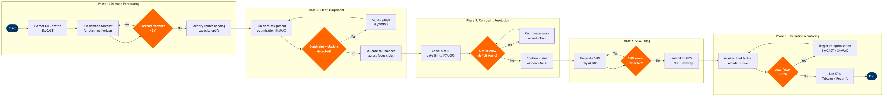

| Step | L4 Step Name | KPI / Target | Pain Point / Risk | Gate |
|---|---|---|---|---|
| 1.1 | Extract historical O&D traffic data | Data completeness ≥98% of active markets | SkyCAST data feeds depend on Altéa PSS booking exports; delays in PSS batch jobs cause stale baseline traffic inputs, distorting forecasts for thin markets | |
| 1.2 | Run demand forecast for planning horizon | Forecast MAPE ≤8% at 90-day horizon | Thin LCC markets and new routes lack sufficient booking history; SkyCAST model defaults to industry averages, understating demand elasticity for fare-sensitive leisure segments | |
| 1.3 | Validate forecast variance against prior cycle | Forecast variance report produced within 2 business days of data extraction | Manual comparison between planning cycles is error-prone; no automated delta alerting in SkyCAST baseline module — analyst must export to Excel for comparison | ⚠ |
| 1.4 | Identify routes requiring capacity uplift | Capacity gap identification covering 100% of markets with forecast load factor ≥85% | SkySYM network simulation does not natively import SkyCAST output in real time; manual CSV handoff between tools introduces reconciliation lag of 1–2 days | |
| 2.1 | Run initial fleet assignment optimisation | Fleet utilisation ≥13.5 block hours/aircraft/day across active rotations | SkyMAX optimiser is sensitive to input parameter sequencing; incorrect fleet availability seeding (e.g., aircraft in scheduled maintenance not flagged) generates infeasible rotations that require manual correction | |
| 2.2 | Detect constraint violations in fleet plan | Zero hard constraint violations (MTOW, turn-time) in approved plan | SkyMAX surface-level constraint checker does not model real-time gate availability at congested airports (e.g., LHR, JFK slots); gate conflicts surface only post-filing via airport coordination | ⚠ |
| 2.3 | Adjust gauge on constrained rotations | All gauge adjustments resolved and re-optimised within 3 business days | Downgrading gauge to resolve tail-count imbalance at outstations triggers yield loss on high-demand rotations; no automated revenue impact warning exists in SkyWORKS at point of gauge swap | |
| 2.4 | Validate tail-count balance across network | Overnight positioning plan with zero unresolved imbalances before SSIM submission | Overnight imbalances at spoke stations with no maintenance capability require costly ferry flights; SkyMAX does not auto-flag stations without MRO support when positioning aircraft | |
| 3.1 | Assess slot and gate availability constraints | 100% of Level 3 coordinated airports reviewed before SSIM submission | Slot exchanges with competing carriers at Level 3 airports require bilateral negotiation through IATA slot conferences; lead times of 6–12 months compress planning windows for seasonal capacity changes | ⚠ |
| 3.2 | Review maintenance capacity windows | Zero unplanned maintenance conflicts in 90-day rolling capacity plan | AMOS maintenance window data is not directly integrated with SkyMAX fleet assignment; planners rely on manual exports and cross-referencing in spreadsheets, creating reconciliation errors during peak planning periods | |
| 3.3 | Validate crew availability against planned capacity | Crew coverage ratio ≥105% (buffer above minimum legal complement) | Jeppesen Crew Management pairing outputs are built on published schedule; capacity changes post-pairing require full rerun of crew pairings, increasing planning cycle time by 3–5 days and risking FAR Part 117 duty-time compliance gaps | ⚠ |
| 3.4 | Resolve crew or slot deficits via capacity swap | All crew and slot deficits resolved before SSIM filing deadline | Reducing frequencies to resolve crew deficits at hub bases cascades into load factor pressure on remaining departures; decision lacks integrated revenue-impact modelling at point of resolution in SkyWORKS | |
| 4.1 | Generate SSIM schedule file for submission | SSIM file generated within 1 business day of capacity plan sign-off | SkyWORKS SSIM export module requires manual mapping of codeshare flight suffixes for partner flights; errors in suffix formatting cause GDS rejection and require resubmission, delaying schedule availability by 24–48 hours | |
| 4.2 | Validate SSIM file against IATA standards | Zero critical SSIM errors at point of GDS submission | OAG validation catches structural SSIM errors but does not validate operational feasibility (e.g., turn-time violations at specific airports); operationally infeasible schedules pass SSIM validation and are caught only during operations | ⚠ |
| 4.3 | Submit validated schedule to GDS and NDC channels | Schedule available in all GDS channels within 4 hours of SSIM submission; NDC availability within 2 hours | Travelport GDS schedule updates lag Amadeus and Sabre by up to 6 hours due to batch processing cadence; passengers booking via Travelport-connected TMCs may see stale capacity, resulting in overbooking conflicts at check-in | |
| 5.1 | Monitor in-period seat utilization vs forecast | System load factor ≥83% on average across active network; individual market load factor reviewed weekly | Amadeus NRM monitors inventory at O&D level but does not natively surface segment-level spill and recapture estimates; capacity reoptimisation decisions rely on analyst judgment without automated spill quantification | ⚠ |
| 5.2 | Trigger capacity reoptimisation for underperforming routes | Reoptimisation recommendation issued within 48 hours of load factor breach trigger | Within-60-day capacity changes require coordinated updates across Altéa PSS (inventory), SkyWORKS (schedule), and Jeppesen Crew (pairings); the lack of a unified change-management workflow causes synchronisation failures and involuntary passenger re-accommodation | |
| 5.3 | Log final utilization KPIs and close planning cycle | Post-cycle report published within 5 business days of season end; forecast vs actual load factor variance documented for model calibration | Redshift data pipeline aggregates actuals from Altéa PSS on a 24-hour delay; post-departure analysis for redeye and overnight flights often reflects next-day timestamps, distorting daily load factor KPIs in Tableau dashboards |